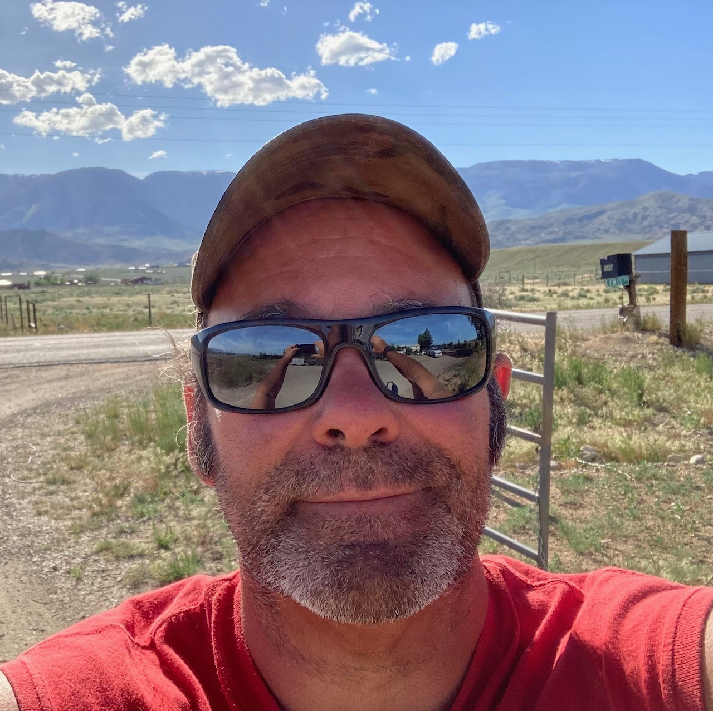

Tracy Lewis

Summary
A highly motivated, detail oriented individual who works well in a group, or individually, with little or no supervision. Proven history of successful project management, meeting deadlines and surpassing expectations. Excellent communication and collaboration skills for working with cross-functional teams. Extremely adaptable and quick learner able to rapidly acquire new skills and knowledge. Constantly considering the possiblities of the operational outcome to ensure problems are mitigated before encountering issues. Constantly assesing and preparing for future possibilities.
Work Experience
- L7 Oilfield Consulting LLC
I established my own company and have been self employed for nearly 25 years. My carreer is in a very specialized sector of the oil and gas exploration and drilling industry. I provide a service, steering tools such as motors, or rotary steerable systems down hole while drilling. Maintaining constant contact with the clients representave, to ensure the clients plans and goals are achieved in the most effective, and efficient manner. Additionally, keeping open and regular communication with the company geologists, geology department and geosteering group to make certain that we keep the well bore in the most productive position within the formation.
- US Army Airborne Infantry.
I served proudly in the United States Army in the Airborne Infantry for 8 years. While serving, I was an instructor for the American militaries only Airborne School for two years in Ft. Benning, Georgia. I also served in Ft. Richardson, Alaska, and Ft. Carson, Colorado.
Skills
- Integrity: Leading by example and demonstrating integrity in actions and words. Honesty, being ethical, and transparency, build trust and respect among coworkers and followers.
- Vision: A clear and compelling vision for the future. The ability to articulate this vision in a way that inspires and motivates others to work towards achieving it.
- Decision-making: The ability to effectively make tough decisions, even in the face of uncertainty or opposition. Gathering relevant information, weigh the pros and cons, and make informed choices that align with the vision and values.
- Empowerment: Empowering team members by delegating responsibilities, providing autonomy, and encouraging professional growth. Recognize and leverage the strengths of team members, fostering a sense of ownership and accountability.
- Communication: Effective communication is essential for leaders to clearly convey their vision, goals, and expectations to their team. It's also crucial for team members to communicate openly, share ideas, and provide feedback.
- Collaboration: Leaders must foster an environment that promotes teamwork and collaboration. Team members should be able to work together harmoniously, leveraging each other's strengths and supporting one another towards a common goal.
- Problem-solving: Both leaders and team members need strong problem-solving skills to identify challenges, analyze situations, and develop effective solutions. This involves critical thinking, creativity, and the ability to make well-informed decisions.
- Adaptability: In today's rapidly changing business environment, leaders and team members must be adaptable and flexible. They should be open to change, able to pivot when necessary, and willing to embrace new ideas and approaches.
Awards and Achievements
- Distinquished Honor Graduate
- US Army Primary Leadership Development School
- US Army Accommodation Award
- US Army Achievement Award
Education
Contact
About